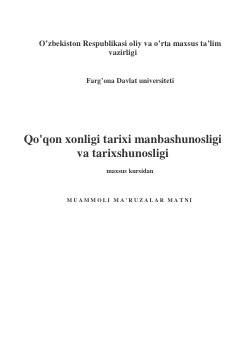

QXQo'qon xonligi tarixi bo'yicha magistrantlar uchun mo'ljallangan maxsus kurs ma'ruzalari matni.
Ushbu o'quv qo'llanma Farg'ona davlat universiteti magistrantlari uchun mo'ljallangan bo'lib, Qo'qon xonligi tarixini o'rganishda manbashunoslik va tarixshunoslik masalalarini yoritadi. Unda xonlik tarixiga oid yozma manbalar, ularni tahlil qilish usullari hamda tarixshunoslikning asosiy bosqichlari ilmiy-nazariy jihatdan tahlil qilinadi.